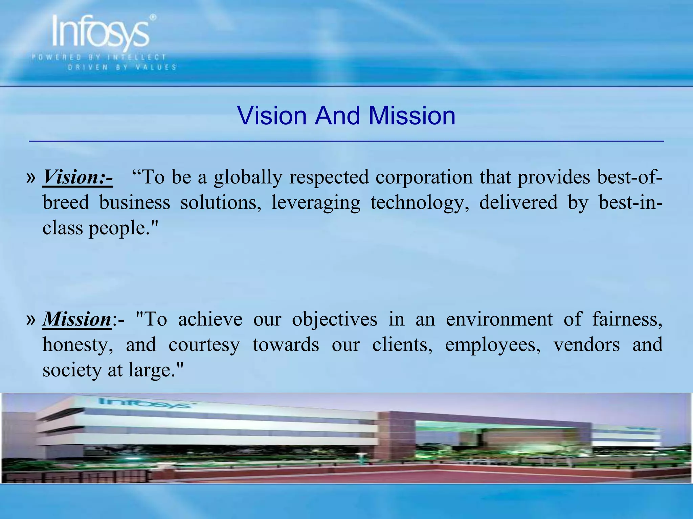
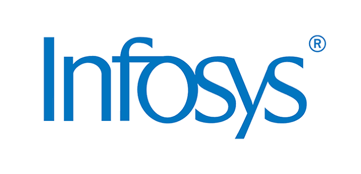

About INFOSYS



Infosys Limited is an Indian multinational technology company that offers information technology, business consulting, and outsourcing services. Founded in 1981 by seven engineers, the company is headquartered in Bengaluru and considered one of the Big Six Indian IT companies. Infosys has also attracted controversies due to allegations of visa and tax fraud in the United States and for creating malfunctioning government websites.
Infosys was founded by N. R. Narayana Murthy, Nandan Nilekani, Kris Gopalakrishnan, S. D. Shibulal, K. Dinesh, N. S. Raghavan, and Ashok Arora, with an initial capital of $250. It was incorporated as Infosys Consultants Private Limited in Pune on 2 July 1981,[6] before relocating to Bangalore in 1983.[7] Arora left the company in 1989 and sold his shares to the other co-founders. In the 1980s, Infosys briefly made hardware products like electronic telex machines and keyboard concentrators. Its core business of offshore custom software development witnessed growth after the 1991 economic liberalisation of India. In February 1993, Infosys launched its initial public offering (IPO) with an offer price of ₹95 per share. The IPO was initially undersubscribed which led American investment bank Morgan Stanley to price stabilize the IPO by acquiring a 13% equity stake in INFY. The share price eventually opened at ₹145 per share in June 1993. Infosys released its banking automation software package Bancs2000 in 1994, middleware architecture product Entark in 1995, and Y2K problem toolset "In2000" a year later. In the mid to late 1990s, Infosys also incubated software product subsidiaries like e-fulfillment and WMS software provider Yantra, and mobile VAS developer OnMobile, which were subsequently spun off and divested. Infosys listed its American depositary receipts (ADRs) on Nasdaq in March 1999, making it the first Indian company to be listed on Nasdaq. Infosys was then among the top 20 companies by market capitalization on the Nasdaq. The ADR listing was later transferred to NYSE Euronext to provide European investors with better access to the company's shares. In 1999, Infosys rolled out Finacle, a core banking software suite developed as the successor to Bancs2000. The same year, Infosys started its research and innovation arm called SETLabs (later renamed Infosys Labs). In 2004, SETLabs formed an intellectual property (IP) cell; Infosys was reported to be earning about 10% of its total revenue from patent pending IP assets in 2006. In 2002, Infosys created a business process management division called Progeon (now Infosys BPM), with Citigroup taking a minority stake in the venture for $20 million. In 2004, Infosys established a wholly owned consulting subsidiary called Infosys Consulting, based in Fremont, California.In 2006, Infosys bought out Citigroup's entire 23% stake in Progeon for $115 million.